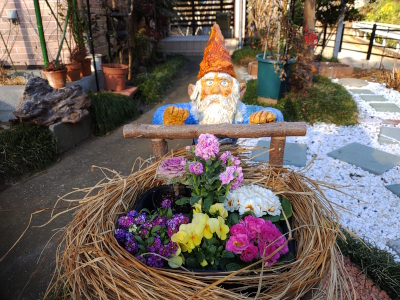
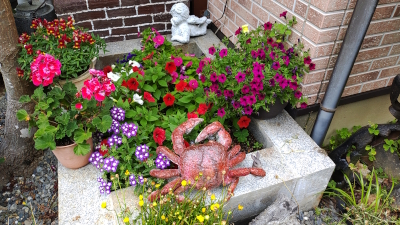
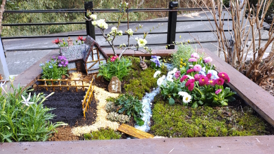
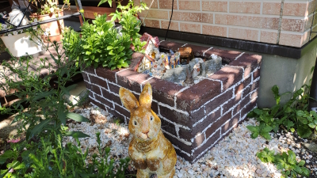

発泡スチロール・スタイロフォーム・モルタルで作るガーデンオブジェ
— 軽くて丈夫、屋外映えする造形を、身近な素材で実現する —
ここでは、発泡スチロール（EPS）やスタイロフォーム（押出法ポリスチレン）、そしてモルタルを組み合わせて作る 屋外ガーデンオブジェの作例を紹介します。軽量で加工しやすいフォーム材を芯に、モルタルで表層をコートし、 塗装とトップコートで仕上げることで、屋外でも映える耐候性と質感を両立させます。
作品ギャラリー
下のギャラリーから各作品ページ（または制作動画）をご覧いただけます。
-
https://www.youtube.com/watch?v=XXXXXXXXXXX
 作品名:手押し車を押す小びと 体長60センチ、手押し車には寄せ植えプランターが載せられる。
-
https://www.youtube.com/watch?v=YYYYYYYYYYY
犬のウェルカムボード 玄関ポーチに飾ると、お客さんもほっこりする。
-
https://www.youtube.com/watch?v=XXXXXXXXXXX
 作品名:花壇で休むカニ さりげなく花壇の中に入れておくのがオシャレ。
-
https://www.youtube.com/watch?v=YYYYYYYYYYY
 作品名:田舎の原風景 家は発泡スチロールとモルタルと割りばし。小川が難しかった。
-
https://www.youtube.com/watch?v=XXXXXXXXXXX

作品名:顔と宝箱とウサギ 顔はプランターカバー、宝箱には花を入れておくと良い！
-
https://www.youtube.com/watch?v=YYYYYYYYYYY
 作品名:なんちゃって花壇とウサギ レンガ調花壇は発泡スチロール、ウサギが可愛い！
制作過程動画（YouTube）
各作品の制作過程をYouTubeで公開しています（再生リストにまとめてもOK）。
-
- https://www.youtube.com/watch?v=YYYYYYYYYYY作品名B｜タイムラプス （工程の流れを短時間で）
作り方（全体手順）
以下は、今回の制作で想定する標準手順です。画像枠に工程写真や説明図を入れてください。
-
作りたいものを決める。
/assets/img/obj/steps/step01-concept.jpg スケッチや参考写真で方向性を固める。 全体の雰囲気、設置場所（屋外/屋根下）、サイズ感、完成後の重量や搬入経路も先に検討しておくと安全です。
-
作りたい大きさを決める。
/assets/img/obj/steps/step02-size.jpg 高さ・幅・奥行の最大値をメモし、設置面の水平・安定も考慮。 後の塗膜（モルタル＋塗装＋トップコート）で若干大きくなるため、芯材は完成より少し小さめ設計が無難です。
-
複雑な造形の場合は、いくつかのパーツに分けて寸法を出す。

算出した寸法に見合った大きさになるように、スタイロフォームを切って重ね、削り出すための箱（直方体）を作る。
/assets/img/obj/steps/step04-block.jpg 接着剤はフォーム対応品を使用（溶剤で溶けないもの）。 厚みの違う板を積層して直方体を作成。固着後に基準面を出しておくと、この後の削りが楽になります。
-
前や横から輪郭線を描き、カッターやヤスリでざっくりと削り出す。
/assets/img/obj/steps/step05-roughcut.jpg 刃はよく切れるものを使用。粉塵対策・保護具を忘れずに。 切り過ぎないよう「少し手前」で止め、ヤスリで近づけると破損リスクを抑えられます。
-
パーツを結合させて、細かい部分まで削って形を整える。

モルタルをホットケーキの生地のようにねっとりとした状態にして刷毛で塗る。
/assets/img/obj/steps/step07-mortar.jpg 下地が見えない程度に薄〜中塗り。段階的に厚みを出すと割れにくい。 ダレ防止のため、一度に厚塗りしないのがコツ。凹凸やテクスチャは半乾きのタイミングで入れると定着が良いです。
-
よく乾いたら下地材としてニスを薄く塗る。

塗装をする。

塗装が乾いたら仕上げにウレタンニスを塗る。
/assets/img/obj/steps/step10-topcoat.jpg 艶消し・半艶・艶ありを作風に合わせて選択。 面を薄く覆うことで耐候性・耐水性が向上。角やエッジは膜厚が薄くなりやすいので丁寧に。
簡単図解（ステップ別ダイアグラム）
要点だけをイラストで確認できる簡易図解です。各画像は差し替えてお使いください。
 芯：積層→直方体→荒削り
芯：積層→直方体→荒削り
材料・道具（抜粋）
- スタイロフォーム（押出法PS）、発泡スチロール板
- フォーム対応接着剤（溶剤系で溶けないタイプ）
- カッター、替刃、やすり、ノコ、ホットワイヤー等
- モルタル（適度に粘性を保持できる配合）
- 刷毛・コテ・混練用バケツ
- 下地ニス、耐候性塗料、ウレタンニス（艶選択）
- 養生シート、ゴム手袋、防塵マスク、保護メガネ
安全上の注意
- フォーム切削時は防塵マスク・保護メガネを着用。粉や切りくずを吸い込まない、目に入れない。
- モルタル作業時は皮膚保護（アルカリ性）。素手での長時間接触を避ける。
- 塗料・ニスは換気を十分に。可燃性・溶剤臭に注意。
- 重量物化する場合は設置面の強度・転倒防止を確認。